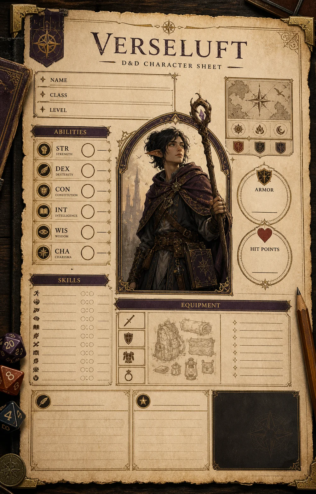
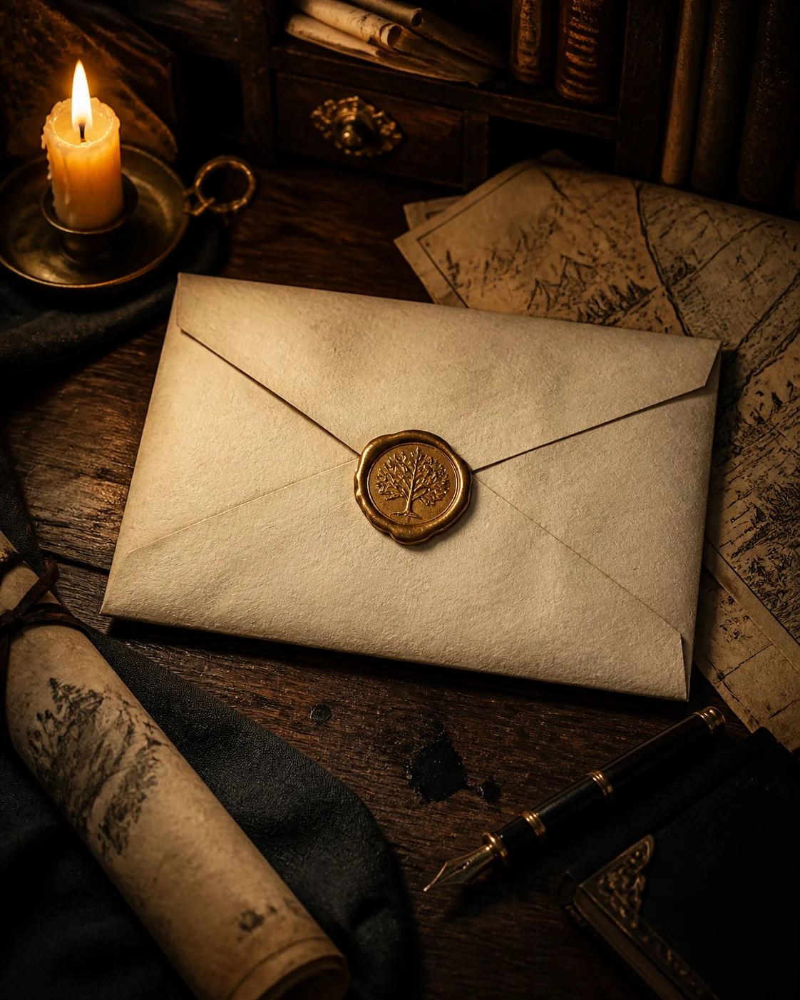

DM ADVICE
DM ADVICE For Dungeon Masters & players
D&D adventures.
Your next story.
Discover third-party Dungeons & Dragons adventures, campaign settings, and supplements for Dungeon Masters and players. Our catalog includes books for the 2014 rules, with newer releases using the 2024 rules.
Browse D&D books ↗ Scroll to explore
For your
D&D table.
Explore our D&D supplements through sample pages, artwork, and ideas for your campaign. Our catalog spans the 2014 rules (5e) and the updated 2024 rules (5.5e). Newer books use the 2024 rules; check each title for its rules version.
90+Published Books
9k+Backers
12k+Pages
Inside a Verseluft book
Loading sample pages…
01–02 / --
Use the arrows or click the dots to turn the pages
“
It feels like opening a beautifully made box of possibilities. There’s always something here that makes our table lean in a little closer.
About Verseluft
A home for
D&D adventures.
Verseluft creates third-party books for Dungeons & Dragons: adventures to explore, settings to make your own, and supplements to expand your campaign.
Our books help Dungeon Masters and players bring new stories to life. We publish for the 2014 and 2024 D&D rules, with newer releases built around the 2024 rules. We put care into every book, value fairness for creators, and leave room for your group's imagination.

01
Fairness for creators
We value clear communication and honest relationships with the people who make our books.
02
Room for every table
Different voices, worlds, and playstyles help make tabletop roleplaying richer for everyone.
03
Care on every page
We aim to make RPG books that spark ideas and earn a place in your next session.
Kickstarter & upcoming releases
Your next campaign.
Discover upcoming D&D adventures, campaign settings, and Dungeon Master resources from Verseluft. Our newer books use the 2024 rules. Explore the projects below and follow their journey to your table.
01
Live on Kickstarter
D&D NEWS FROM VERSELUFTPull up a chair.
Pull up a chair.
Stay inspired.
Hear about our latest D&D supplements for the 2024 rules, Kickstarter launches, and book previews. Bring fresh inspiration to your campaign.

The Verseluft journal
DM advice &
studio notes.
Find inspiration for your D&D campaign with worldbuilding ideas, advice for Dungeon Masters, and a look behind the scenes of our books.
 01 / BEHIND THE SCENESWorldbuilding
01 / BEHIND THE SCENESWorldbuildingfor the table.Inside the making of a campaign world
Behind the scenes · 8 min read
D&D worldbuilding: what makes a setting playable?
A memorable D&D setting gives players reasons to explore. Look beyond maps and lore to the people, places, and unanswered questions that invite your group into the story.
Read the worldbuilding article ↗DM ADVICE MAKING GAMES
MAKING GAMESMaking games · 7 min read
Creating a D&D supplement: from idea to table
Explore the publishing process ↗ NEWS
NEWS